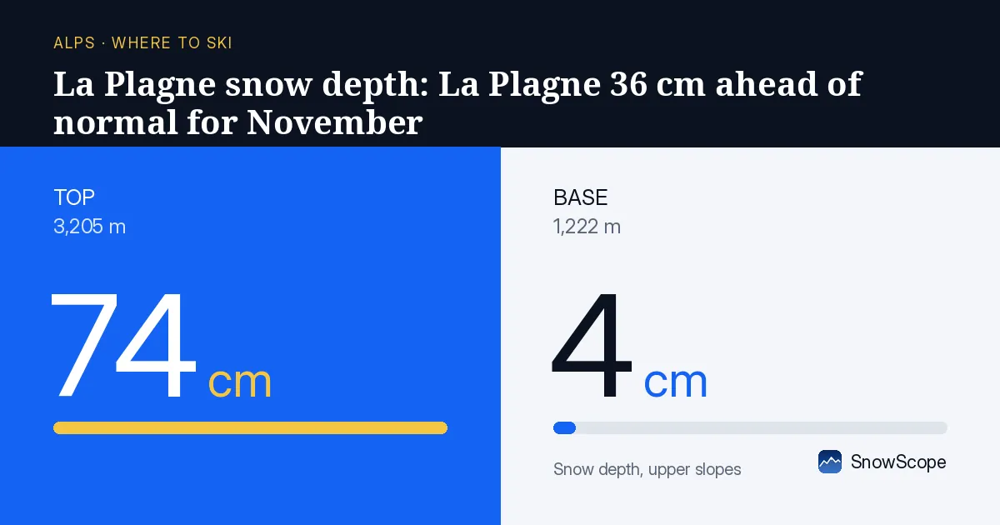

La Plagne snow depth: La Plagne 36 cm ahead of normal for November
La Plagne snow depth – Snow across the Alps is building faster than any recent memory would expect for late November. At La Plagne's mid-slopes, our measurements show 36 cm more snow today than the typical amount for this date in past winters, a gain of 38 percent.
See the live snow forecast for La Plagne in the SnowScope appSnow depth, powder alerts and the 3D map, free.
How much ahead are we really?
Water stored in the mountains right now matters for winter. We compare today's snow depth to the average of the past 46 winters on the same date. At La Plagne's mid-slopes, 2,137 m elevation, SnowScope shows 36 cm today versus a usual 38 cm at this point in the season. That sounds close, but the story is different higher up. At the top, 3,058 m, the estimates 84 cm, well above what the season normally delivers by November. The upper slopes are where the water supply begins.
This surplus matters because early snow consolidates and refills mountain reservoirs through spring. Where snow falls now on cold ground, it stays. The pattern is clear across the northern French Alps—the season is writing an early surplus into the books.
| Resort | Snow depth | New snow, 72 h | Coming, next days | Top |
|---|---|---|---|---|
| Les Arcs | 166 cm | 134 cm | 77 cm | 3,205 m |
| Orelle | 145 cm | 143 cm | 92 cm | 3,221 m |
| La Plagne | 144 cm | 125 cm | 77 cm | 3,058 m |
| La Grave | 133 cm | 122 cm | 108 cm | 3,543 m |
| La Rosière | 131 cm | 130 cm | 72 cm | 2,799 m |

Three days of heavy snow ahead
Most will fall on Saturday 22 November: 52 cm in a single day. This is not a marginal addition; it is a pulse that will push the mid-slopes from 36 cm to around 84 cm by Sunday evening. At Les Arcs, the same Saturday brings 52 cm, lifting the depth from 166 cm to over 200 cm on the upper terrain.
The freezing level will drop as the system moves in. On Saturday it falls to 1,870 m at La Plagne, meaning snow will reach the base areas—1,217 m—for the first time in this season's official record. By Sunday 23 November the freezing level plunges to 1,340 m. Cold air is arriving with the snow.
Water on the move from high ground
Snow depth measurements at three high-altitude stations tell us how the water has already settled. At Weißseespitze, 3,499 m in Austria, the depth measured on 20 November was 352 cm. At Donin du Jour, 2,385 m in Switzerland, 106 cm was measured on the same day, with 33 cm added in the previous 24 hours. The snow is thickening fast at middle elevations where streams and melt begin their work.
These are station measurements at single points on 20 November, not estimates across a wide area. But they confirm what the forecast shows: snow is accumulating rapidly above 2,300 m and will continue through the weekend. The water will not run to the valleys yet—it is still frozen—but the total stored in the mountains is rising sharply.
Where to find skiable snow today
Les Arcs leads the region with 166 cm on its upper slopes as of 20 November. Orelle holds 145 cm, and La Plagne 144 cm. All three resorts show similar recent gain: around 50 cm fell in the 24 hours before 20 November across these sites. The difference between them is small, but height matters. At La Plagne's base, 1,217 m, SnowScope shows only 8 cm. Thin snow there risks exposure to rock and soil.
By Sunday 23 November, the region's snow-covered area is forecast to grow from 77,180 km² today to 100,870 km². That is 1,040 of the 1,204 resorts in the Alps gaining snow cover. The lower resorts will join the upper ones. This is a turning point in the season—the moment when water storage in the mountains shifts from token to real.
What comes next
After Sunday, SnowScope shows only small additions: 17 cm at Les Arcs and 18 cm at La Plagne on 23 November itself, then drier days. The main pulse is Saturday. If the forecast holds, the Alps will enter late November with water reserves well above the 46-year trend. That surplus will not all survive the spring—some will melt through winter warm spells—but it is a strong start to the season.
For now, focus on the high ground. Upper slopes at Les Arcs, Orelle, and La Plagne will be the best ski terrain through Saturday, with new snow arriving fresh through the day. Watch the freezing level; on Saturday it touches base areas at some resorts, meaning wet snow is possible lower down. Check the official avalanche bulletin before going off-piste after the heavy fall on Saturday.
Tips for skiers
- Ski above 2,300 m this weekend for the best snow quality and safest conditions. Lower slopes will see wet snow on Saturday as the freezing level drops.
- Saturday 22 November will be the heaviest snow day: 52 cm expected at mid and upper slopes. Visibility and avalanche risk will both be high—consult your local avalanche bulletin before leaving marked runs.
- By Sunday 23 November, upper slopes at Les Arcs and La Plagne will hold over 200 cm. That is excellent coverage for late November, but the base areas remain thin; stay on groomed terrain at lower elevations.
- Early-season snow at this depth and speed does not last forever if warm weather returns. The water is in the mountains now, but winter is not settled yet. Plan multi-day trips to consolidate the gains.
- Local winds can shift snow depth significantly, and thin patches under deep cover can still hide rocks. Exercise care on narrow slopes and always wear a helmet.
About these numbers
Resort snow depths are the deepest snow on the resort's upper slopes on the date shown; they are estimates for an area, not a measurement at one point. Forecasts can change. Always read the official avalanche bulletin before going off-piste.
Official avalanche bulletins: EAWS (Alps)
Cite this report
For research, teaching or the press: the numbers and charts are free to reuse under CC BY 4.0 with this citation.
SnowScope (2026), La Plagne snow depth: La Plagne 36 cm ahead of normal for November, https://snowscope.app/blog/en/2026/11/alps-la-plagne-snow-depth-today-20-november-2026.html, accessed 2026-11-20
SnowScope (Atlas Labs). (2026, November 20). La Plagne snow depth: La Plagne 36 cm ahead of normal for November. SnowScope snow reports. https://snowscope.app/blog/en/2026/11/alps-la-plagne-snow-depth-today-20-november-2026.html
BibTeX
@misc{snowscope2026alpslaplagnesnowdepthtod,
author = {{SnowScope (Atlas Labs)}},
title = {La Plagne snow depth: La Plagne 36 cm ahead of normal for November},
year = {2026},
month = nov,
howpublished = {\url{https://snowscope.app/blog/en/2026/11/alps-la-plagne-snow-depth-today-20-november-2026.html}},
note = {Published 2026-11-21 10:38 UTC; accessed 2026-11-20}
}· CC BY 4.0 · Methods, data and tools →
La Plagne: snow and temperature by height, this winter vs last (tools) →
Follow La Plagne
Free: a message when fresh snow is coming, and the forecast every morning.
More snow reports

Alps snow report, 18 November. We weighed the snow already on the ground, the new snow of the last 72 hours and what the forecast adds, and picked …

The 0 °C level in the Alps, next days: 1,330 m to 3,210 m. Warmest hours: snow line about 300 m lower, up to 2,900 m at La Grave on Sunday 22 …

Les Arcs snow forecast for 23–29 November 2026: 29 cm at the top (11–48 cm), 12 cm at the base, snowiest day Thursday 26 November, with neighbours compared.